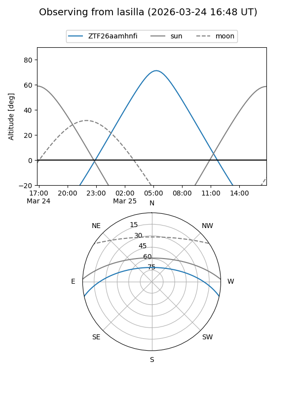
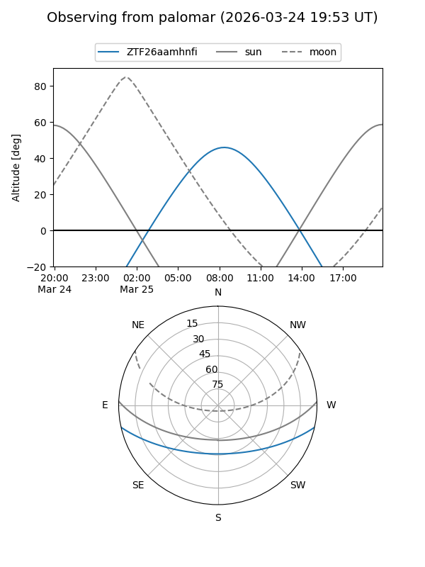

ZTF26aamhnfi
Target ZTF26aamhnfi at 2026-03-25 09:32
Aliases and brokers:
FINK: link
Lasair: link
ALeRCE: link
alt names
ZTF26aamhnfi (ztf,fink_ztf)
Coordinates:
equatorial (ra, dec) = 191.0373,-10.50278
equatorial (HMS+DMS) = 12:44:08.96,-10:30:09.99
galactic (l, b) = (299.9996,+52.32747)
Flags:
Photometry:
last ztfg=17.13, ztfr=15.21
1 ztfg, 1 ztfr detections
Lightcurve
Visibility


Additional plots